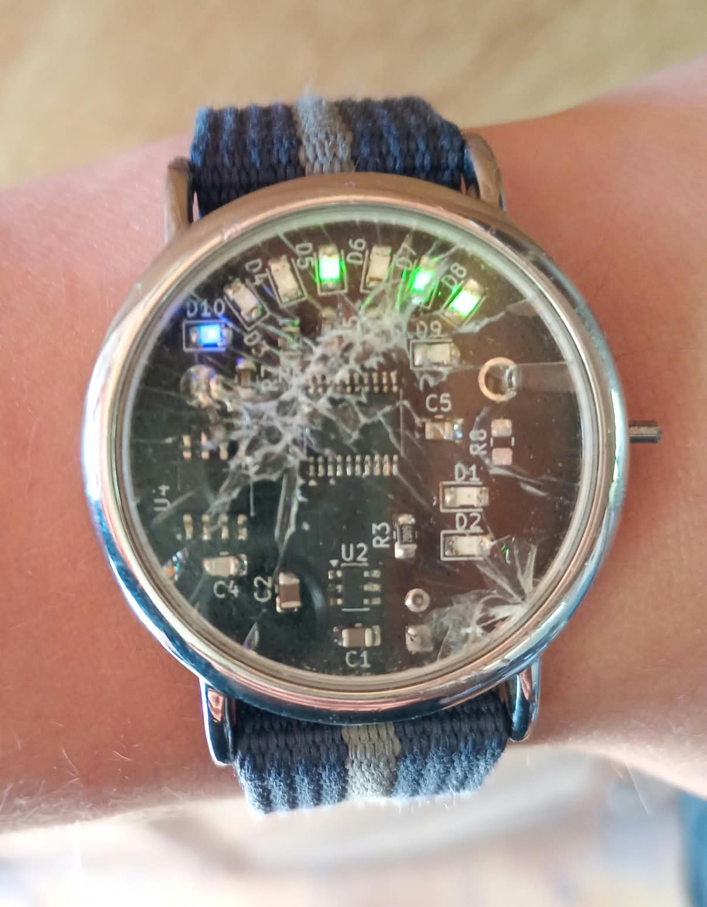

I apologize for the lack of pictures in advance. I didn’t plan on documenting this project here until I was already done with it.
Watches, we all know them we all love them (or at least I hope you do) and I have a habit of breaking them. Most of them drowned. But the last one I had, broke in a more stupid and let’s say mechanical way. I’m kind of ashamed because it was 100% my fault so I’m not going to talk about the details here, but let’s just say it is in deed broken. Now I love my time keeping but I didn’t want to buy another watch just to eventually break it again. So the Idea formed to just build a little watch myself. I mean how hard could it be? Also I still had the case of my old watch so I could but the new one in there and it would look pretty professional. Sadly I neither have the expertise or the machining capabilities to build an analog watch. So digital it was going to be. All thou to save power and especially space the display would have to be in binary. Many people may find this weird... because it is. But I wanted this to be a quick and easy project. Plus it’s a good opportunity to get faster at reading binary.
For timekeeping I selected the MCP7940M real time clock (RTC) chip thru the very advanced process of sorting by price on DigiKey. It basically just needs an 32768 hz crystal and a few capacitors to work. And can be interfaced with thru I2C. I would also need a microcontroller to control the RTC and handle the display. I had some CH32V003’s laying around so that’s what I used. If you some how haven’t heard of these, I can only recommend you to try them out. There super cheap and a guy called CNLohr made an open source development environment for them. If you’re willing to not be a script kiddie there truly great. For the battery I wanted to use the Lir2032 a rechargeable lithium coin cell battery so I added a charger IC (the TP4057) and it’s supporting components to the PCB design. The display consists of 8 leds, 6 of which are used to display the time. Now obviously you can’t fit seconds, minutes and hours all in 6 bits. So how it works is, that you can select which of these 3 you want so see with a button and the other two leds tell you which one is currently being selected. To save on power the display only turns on when you press the button. Also while the display is off the ch32v003 enters standby mode which makes the whole watch only draw about 10uA. In comparison it draws about 1.5mA when the display and microcontroller are on. One interesting thing to mention is that the leds are charlieplexed. I did that just because it could basically.
Software was pretty straight forward. I bitbanged I2C because I think the I2C hardware needs a minimal clock speed of 4 MHz to work and I wanted to run at the slowest clock speed that I would get away with to minimize power consumption. The Software basically sends the microcontroller to standby mode (which is the deepest sleep mode the ch32v003 has) after initializing everything. A press of the button then triggers a interrupt that wakes it from it’s slumber. It then stays on for about 10 seconds. The length of a button presses will get measured while it’s on. A button press long than about half a second will change the thing that is currently displayed. So for example if you are currently seeing minutes it will change to hours. A press longer than about 2 seconds will make the watch enter setting mode. Which will alow you to increment the thing that is currently selected with a short press of the button. To exit setting mode you just have to press the button for more than 2 seconds again. Also the watch will not fall asleep while in setting mode. I quite like this system because it allows you to, for example, just set the minutes but leave everything else as is. Now that’s basically it. The whole thing is only about 400 lines of code.
The code and KiCAD files for the PCB can be found here
See y’all!